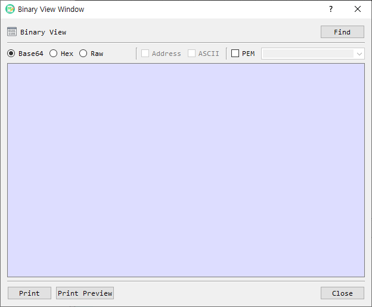

Binary View Dialog Guide
The Binary View dialog displays binary data as Base64, a formatted hexadecimal dump, or a continuous hexadecimal value. Open it from Tool > Binary View.

Figure 1. Binary View dialog. Base64 is selected by default; use Find to load a file and change the output format as needed.
The implementation file is named
bin_view_dlg, while the menu and dialog call this feature Binary View.
Screen Areas
- Find — Opens a file picker and loads a binary file for viewing.
- Base64 — Displays the data as Base64 text. This is the default format.
- Hex — Displays a hexadecimal dump in rows of up to 16 bytes.
- Raw — Displays the complete hexadecimal value without row formatting.
- Address — In Hex view, includes each row's offset. Available only in Hex view.
- ASCII — In Hex view, adds printable characters beside each row. Available only in Hex view.
- PEM — Wraps Base64 output with
BEGINandENDlines. Available only in Base64 view. - PEM type — Selects or enters the label used in the PEM header and footer. The list includes common key, certificate, CSR, CRL, PKCS#7/CMS, and parameter labels.
- Output area — Shows the selected representation. It is read-only.
- Print / Print Preview — Prints the displayed output or previews it before printing.
- Close — Closes the dialog.
View Binary Data
- Select Find and choose a file, or open Binary View from a selected value in BerEditor.
- Choose Base64, Hex, or Raw.
- For Hex view, optionally enable Address and ASCII.
- For Base64 view, optionally enable PEM and choose or enter a PEM type.
- Use Print or Print Preview if you need a paper copy.
Display updates automatically when the format or its options change. The data area is read-only. A local file can also be dragged onto the dialog to load it.
Format Details
- Base64 output is line-wrapped. With PEM enabled, the selected label is used in the PEM boundary lines.
- Hex output is grouped into 16-byte rows. Address shows the offset, and ASCII shows printable characters for each row.
- Raw output is a continuous hexadecimal string; Address and ASCII options are unavailable.